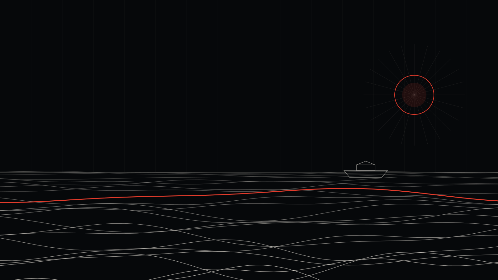

Bozova Instagram Reklamı: Baraj Gölü Kıyısında Ziyaretçi ve Esnaf İçin Rehber

Bozova'da göl kıyısında bir restoranın varsa, en iyi müşterin belki de şu an Şanlıurfa merkezde oturmuş, hafta sonu nereye gideceğini düşünüyor.
Bozova ve Atatürk Barajı
Bozova, Atatürk Barajı gölünün kıyısında yer alan bir ilçe. Göl manzarası, mesire alanları ve balık restoranları, ilçeyi yakın çevre için bir hafta sonu durağına dönüştürüyor. Aynı zamanda tarım, ilçe ekonomisinin önemli bir parçası.
Bozova'daki işletmeler için reklam planı
Göl kıyısı işletmeler
- Hedef: Şanlıurfa merkez ve yakın ilçelerdeki aileler ve gençler.
- Zamanlama: Perşembe ve cuma; hafta sonu planı yapılırken.
- İçerik: Göl manzarası, sofra, gün batımı. Kısa ve dikey videolar.
- Mevsim: Bahar ve yaz aylarında bütçe artışı.
İlçe esnafı
İlçe ve köyleri kapsayan, düşük bütçeli, mesaj odaklı reklamlar.
Üreticiler
Tarım ürünlerini doğrudan satmak isteyen üreticiler için büyük şehirlere satış reklamları.
Şanlıurfa'nın diğer ilçeleri için Şanlıurfa rehberimize bakabilirsin.

Bu yazıyı kim yazdı? Neden bize güvenebilirsin?
Merhaba, ben İsa Tosun; Noah Reklam Ajansı'nın kurucusuyum. Görsel iletişim tasarımcısıyım. Marka kimliği, sosyal medya reklamcılığı, arayüz tasarımı, motion design, 3D görselleştirme ve yapay zekâ destekli prodüksiyon üzerine çalışıyorum. Strateji, tasarım ve reklamı tek bir elde topluyoruz; yani reklamını kuran kişiyle görselini tasarlayan ekip aynı masada.
Ajansımız İstanbul'da. Ama Instagram reklamı tamamen dijital yürüyen bir iş: Bozova'da bir işletmeyle çalışmak, İstanbul'daki bir işletmeyle çalışmaktan farksız. Toplantıyı WhatsApp'ta ya da görüntülü görüşmede yapıyoruz, raporu her ay telefonuna gönderiyoruz.
Neden içinin rahat olabileceğini kısaca anlatayım:
- Fiyatlarımız açık. Sosyal medya paketlerimiz aylık 15.000 TL, 27.000 TL ve 39.000 TL; sitede yazıyor, sürpriz yok.
- Paran ajansta durmaz. Reklam hesabı senin işletmenin adına açılır, reklam bütçesi senin kartından doğrudan Meta'ya, TikTok'a ya da Google'a ödenir. Harcamanın tamamını kendi panelinden görürsün.
- Her ay rapor. Ne kadar harcandı, kaç kişiye ulaşıldı, kaç mesaj ya da satış geldi; hepsi anlaşılır bir raporla önüne gelir.
- Muhatabın belli. Bir çağrı merkezine değil, doğrudan bize yazarsın: 0546 632 83 39.
Bozova'da işletmen için reklamın nasıl kurulacağını merak ediyorsan, reklam yönetimi sayfamıza göz atabilir ya da doğrudan WhatsApp'tan yazabilirsin.
Sıkça sorulan sorular
Göl kenarındaki işletmem için en iyi reklam zamanı ne?
Hafta sonundan önceki günler ve sıcak aylar.
Reklamı Adıyaman tarafında da gösterebilir miyim?
Müşterin göl çevresindeki diğer illerden de geliyorsa evet; reklam alanı il sınırına bağlı değil.
İsa Tosun
Noah Reklam Ajansı'nın kurucusu. Strateji, tasarım ve dijital pazarlamayı tek bir rotada birleştiriyor.